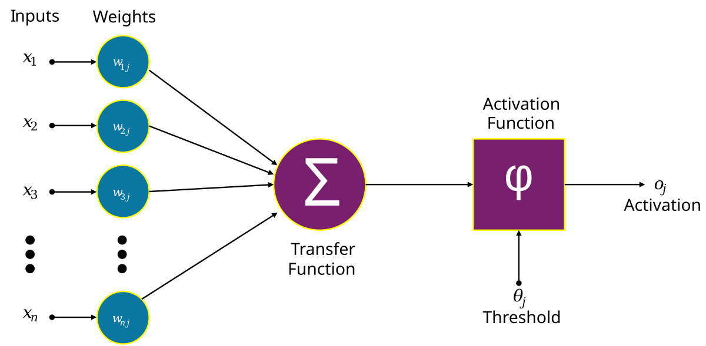

Neural Networks
Neural networks are machine learning models that mimic the complex functions of the human brain. These models consist of interconnected nodes or neurons that process data, learn patterns, and enable tasks such as pattern recognition and decision-making.
Understanding Neural Networks
Neural networks are capable of learning and identifying patterns directly from data without pre-defined rules. These networks are built from several key components:
- Neurons: The basic units that receive inputs, each neuron is governed by a threshold and an activation function.
- Connections: Links between neurons that carry information, regulated by weights and biases.
- Weights and Biases: These parameters determine the strength and influence of connections.
- Propagation Functions: Mechanisms that help process and transfer data across layers of neurons.
- Learning Rule: The method that adjusts weights and biases over time to improve accuracy.
Learning in neural networks follows a structured, three-stage process:
- Input Computation: Data is fed into the network.
- Output Generation: Based on the current parameters, the network generates an output.
- Iterative Refinement: The network refines its output by adjusting weights and biases, gradually improving its performance on diverse tasks.
In an adaptive learning environment, the neural network is exposed to a simulated scenario or dataset, and parameters such as weights and biases are updated in response to new data or conditions. With each adjustment, the network’s response evolves, allowing it to adapt effectively to different tasks or environments.
Analogy between a biological neuron and an artificial neuron.
Importance of Neural Networks
Neural networks are pivotal in identifying complex patterns, solving intricate challenges, and adapting to dynamic environments. Their ability to learn from vast amounts of data is transformative, impacting technologies like natural language processing, self-driving vehicles, and automated decision-making.
Neural networks streamline processes, increase efficiency, and support decision-making across various industries. As a backbone of artificial intelligence, they continue to drive innovation, shaping the future of technology.
Evolution of Neural Networks
Neural networks have undergone significant evolution since their inception in the mid-20th century:
- 1940s-1950s: McCulloch and Pitts introduced the first mathematical model for artificial neurons.
- 1960s-1970s: Frank Rosenblatt's work on perceptrons, simple single-layer networks.
- 1980s: Development of backpropagation by Rumelhart, Hinton, and Williams.
- 1990s: Surge in popularity, followed by the "AI winter."
- 2000s: Resurgence with larger datasets and advances in computational power.
- 2010s-Present: Domination by deep learning models like CNNs and RNNs.
Layers in Neural Network Architecture
- Input Layer: Receives input data.
- Hidden Layers: Perform computational heavy lifting.
- Output Layer: Produces the output of the model.
Working of Neural Networks
Forward Propagation
When data is input into the network, it passes through the network in the forward direction. This process involves:
- Linear Transformation: Each neuron receives inputs, which are multiplied by weights, summed, and a bias is added: \( z = w_1x_1 + w_2x_2 + ... + w_nx_n + b \)
- Activation: The result is passed through an activation function (e.g., ReLU, sigmoid, tanh).
Backpropagation
After forward propagation, the network evaluates its performance and minimizes the loss. This involves:
- Loss Calculation: The network calculates the loss.
- Gradient Calculation: The network computes the gradients of the loss function.
- Weight Update: Weights and biases are updated using an optimization algorithm.
Iteration
The process of forward propagation, loss calculation, backpropagation, and weight update is repeated for many iterations.
Example of Email Classification
Let’s consider a record of an email dataset:
| Email ID | Email Content | Sender | Subject Line | Label |
|---|---|---|---|---|
| 1 | “Get free gift cards now!” | spam@example.com | “Exclusive Offer” | 1 |
Feature vector based on the analysis of keywords such as “free,” “win,” and “offer.”
| Email ID | Email Content | Sender | Subject Line | Feature Vector | Label |
|---|---|---|---|---|---|
| 1 | “Get free gift cards now!” | spam@example.com | “Exclusive Offer” | [1, 0, 1] | 1 |
Working:
- Input Layer: 3 nodes indicate the presence of each keyword.
- Hidden Layer:
- Weighted Sum: Calculation for Neuron H1: \( (1 \times 0.5) + (0 \times -0.2) + (1 \times 0.3) = 0.8 \)
- Weighted Sum: Calculation for Neuron H2: \( (1 \times 0.4) + (0 \times 0.1) + (1 \times -0.5) = -0.1 \)
- Activation Function (ReLU): \( ReLU(0.8) = 0.8 \), \( ReLU(-0.1) = 0 \)
- Output Layer:
- Input: \( (0.8 \times 0.7) + (0 \times 0.2) = 0.56 \)
- Final Activation (Sigmoid): \( \sigma(0.56) \approx 0.636 \)
- Final Classification: The output value of approximately 0.636 indicates the probability of the email being spam. Since this value is greater than 0.5, the neural network classifies the email as spam (1).

Neural Network for Email Classification Example
Learning of a Neural Network
- Supervised Learning: Learning from labeled input-output pairs.
- Unsupervised Learning: Learning without labeled output variables.
- Reinforcement Learning: Learning through interaction with its environment.
Types of Neural Networks
- Feedforward Networks (FNN)
- Multilayer Perceptron (MLP)
- Convolutional Neural Networks (CNN)
- Recurrent Neural Network (RNN)
- Long Short-Term Memory (LSTM)
Implementation of Neural Network using TensorFlow
Here, we implement a simple feedforward neural network that trains on a sample dataset and makes predictions.
- Import Necessary Libraries
- Create and Load Dataset
- Create a Neural Network
- Compile the Model
- Train the Model
- Make Predictions
import numpy as np
import pandas as pd
from tensorflow.keras.models import Sequential
from tensorflow.keras.layers import Dense
# Sample dataset (binary classification)
data = {
'feature1': [0.1, 0.2, 0.3, 0.4, 0.5],
'feature2': [0.5, 0.4, 0.3, 0.2, 0.1],
'label': [0, 0, 1, 1, 1] # Binary labels
}
# Convert to DataFrame
df = pd.DataFrame(data)
# Features (X) and Labels (y)
X = df[['feature1', 'feature2']].values # Input features
y = df['label'].values # Output labels
# Create a Sequential model
model = Sequential()
# Add input layer and hidden layer
model.add(Dense(8, input_dim=2, activation='relu')) # 2 input features, 8 neurons in hidden layer
# Add output layer
model.add(Dense(1, activation='sigmoid')) # Output layer for binary classification
# Compile the model
model.compile(loss='binary_crossentropy', optimizer='adam', metrics=['accuracy'])
# Train the model
model.fit(X, y, epochs=100, batch_size=1, verbose